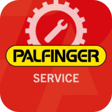
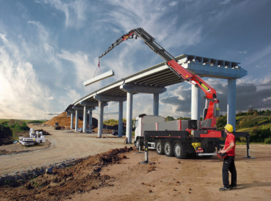
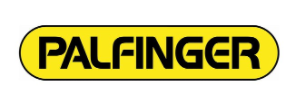
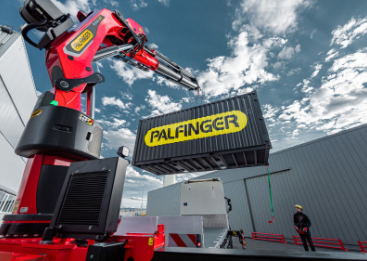

    PAL FIN GER Основанный 3 марта 2015 году завод «Палфингер Кама Цилиндры» является одним из крупнейших производителей гидроцилиндров в России. Palfinger — это австрийская компания, один из мировых лидеров в производстве гидравлических подъёмных кранов, платформ и оборудования для грузоподъёмных решений. Продукция компании широко используется в строительстве, лесной промышленности, энергетике, спасательных операциях и других отраслях.